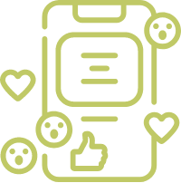
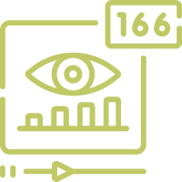
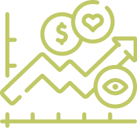

改版目標及需求

提高網路媒體曝光量
集點活動行銷至今已有16年，隨著科技進步及市場消費者型態轉變，推廣活動的方式已不限於傳統電視廣告及新聞媒體，更多著重在網頁瀏覽及社群平台上，消費者從不同裝置都可以隨時查詢活動資訊。

提升消費者易讀性及黏著度
舊版網頁僅限於手機版，在寬度限制下，網頁冗長、瀏覽不易，因此希望藉由改版成RWD網頁，使消費者能以最佳瀏覽方式，清楚了解活動資訊，避免消費者有爭議、客訴。

提升市場競爭力
其他品牌紛紛效仿，競爭環境下，消費者已習慣這樣的行銷模式，漸漸地沒有新鮮感，藉由此次改版，同步推出新活動，進而吸引消費者，更有動力參與集點。